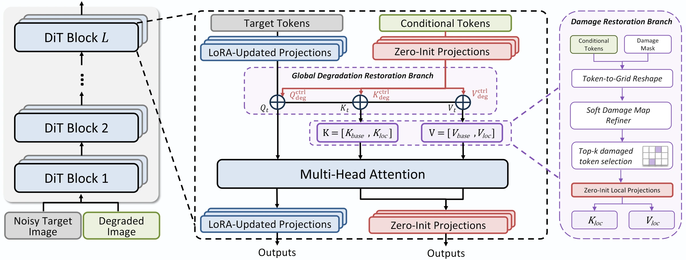
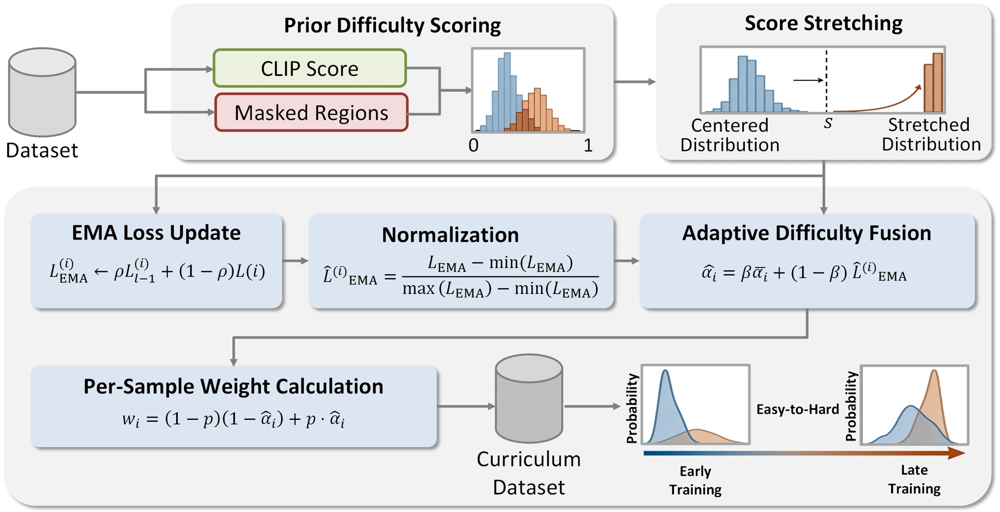
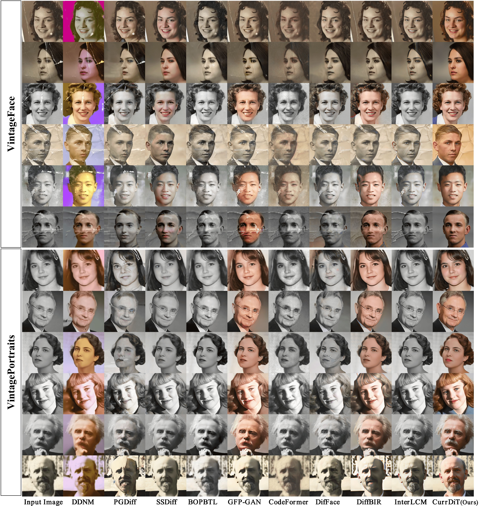
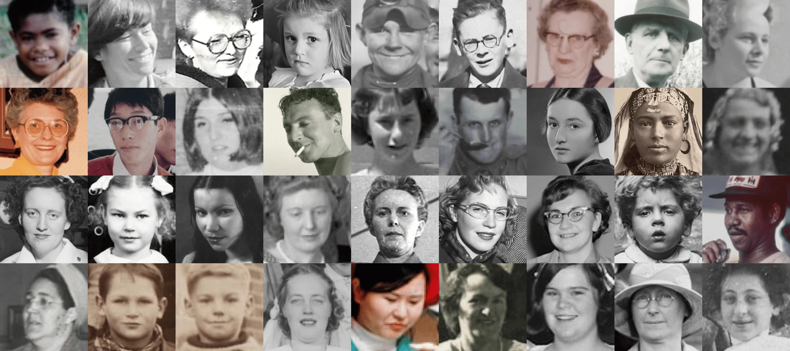
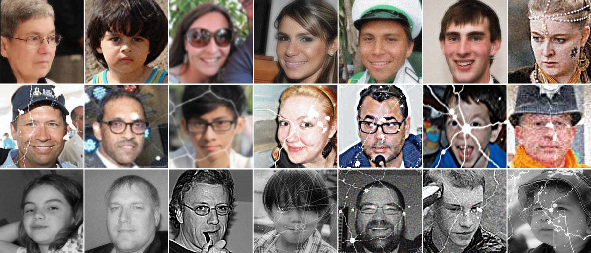

Follow the model’s learning state
Combine prior difficulty with per-sample EMA loss. Gradually shift sampling toward harder degradations while maintaining coverage across difficulty levels.
REAL-WORLD OLD-PHOTO FACE RESTORATION
Learning from easy to hard degradations.
Repairing local damage with reliable global context.
OVERVIEW
Old photographs carry more than blur and noise. Scratches, cracks, fading and discoloration interact with facial details, making faithful restoration particularly difficult.
Real-world old-photo face restoration is severely hindered by the complexity of unknown physical damages and the synthetic-to-real domain gap. While recent Diffusion Transformer (DiT) architectures exhibit powerful generative priors, their static training paradigms treat all degradation levels equally. This inherently leads to a sub-optimal trade-off: over-smoothing on mild degradations and severe identity hallucination on complex physical damages.
We propose CurrDiT, a curriculum-driven dual-stream DiT framework that dynamically adapts to degradation severity. A feedback-driven curriculum sampling strategy dynamically reweights degradation difficulty according to the evolving training state. A Damage Restoration Branch (DRB) uses damage-specific local cues to repair corrupted regions, while a Global Degradation Restoration Branch (GDRB) uses reliable non-damaged regions to guide global appearance.
We further develop a generative degradation synthesis pipeline tailored to old-photo face restoration and construct VintagePortraits, a benchmark of naturally aged old-photo portraits. Experiments on old-photo face and blind face restoration benchmarks evaluate perceptual quality, structural fidelity and identity consistency.
THE METHOD
Feedback-driven sampling and two complementary restoration branches adapt a dual-stream DiT to old-photo degradation.
Combine prior difficulty with per-sample EMA loss. Gradually shift sampling toward harder degradations while maintaining coverage across difficulty levels.
DRB selects the most damage-relevant tokens using a soft confidence map and injects local key-value cues for structural restoration.
GDRB excludes damaged conditional tokens from global attention, using intact regions to guide facial structure, color and appearance.

FEEDBACK-DRIVEN CURRICULUM
Prior difficulty scores are stretched, fused with normalized EMA loss and converted into progressive sampling weights.
p: training progress · αi: dynamic sample difficulty

EXPERIMENTAL RESULTS
Evaluated on VintageFace, VintagePortraits and three real-world blind face restoration benchmarks.
CurrDiT on
VintagePortraits
| Method | QAlign ↑ | MUSIQ ↑ | TOPIQ ↑ | MANIQA ↑ | FID ↓ |
|---|---|---|---|---|---|
| DDNM | 1.6551 | 30.63 | 0.3247 | 0.2343 | 115.57 |
| PGDiff | 2.6595 | 56.94 | 0.4844 | 0.3236 | 65.13 |
| SSDiff | 2.7781 | 58.20 | 0.5217 | 0.3430 | 61.67 |
| BOPBTL | 1.9453 | 34.81 | 0.2639 | 0.1835 | 100.47 |
| GFP-GAN | 2.5772 | 55.40 | 0.4271 | 0.3024 | 56.54 |
| CodeFormer | 1.5747 | 24.98 | 0.3525 | 0.1831 | 154.30 |
| DifFace | 2.5063 | 52.24 | 0.4400 | 0.2803 | 66.25 |
| DiffBIR | 3.9994 | 74.96 | 0.7520 | 0.6448 | 52.66 |
| InterLCM | 3.8853 | 70.55 | 0.6559 | 0.5206 | 54.31 |
| CurrDiT | 4.5152 | 76.78 | 0.7666 | 0.6102 | 43.28 |
Bold: best result in each column. ↑ Higher is better. ↓ Lower is better. These unpaired test sets have no clean ground truth; no-reference quality metrics do not by themselves establish identity fidelity.

VINTAGEPORTRAITS
VintagePortraits complements visibly damaged old-photo benchmarks with naturally aged portraits without prominent structural breakage. It covers fading, blur, low contrast, color shifts, noise and scanning artifacts.

A generative damage-mask pipeline is combined with task-tailored Real-ESRGAN-style degradation. Injecting masks at different stages creates damage with varied sharpness, aging effects and compression artifacts.
